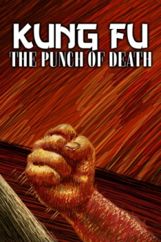

Also known as:The Prodigal Boxer: The Kick of Death (original title)
Country:United States, 90 minutes
Spoken languages:
Genres:Action
Director(s):Tsai Yang-Ming
Writer(s):Ni Kuang
Video Codec:Unknown
Number: 1138


Certification:
Storyline:
THE PRODIGAL BOXER features Chinese folk hero Fong Sai Yuk (aka Fong Si Yu), the subject of dozens of HK kung fu films. The role is played by Meng Fei as a callow, unschooled youth and wrongfully accused murderer. Two vicious masters of the local kung fu school, seeking revenge against Fong Sai Yuk, attack his home and kill his father while Fong is away. Fong’s attempts to avenge the death of his father result in his being badly beaten. Fong trains at the hands of his martial artist mother as she puts him through rigorous training and an herbal bath that makes him invulnerable. A trail of revenge is set in motion with Fong against the two masters, played by formidable kung fu villains Yasuaki Kurata and Wang Ching. Can a year's worth of training prepare Fong Sai Yuk for his deadly confrontation with the vicious masters?
Cast:
Medium: Original DVD,
Comments: Part of: Grindhouse Experience
Loaned: No
Aspect ratio: Unknown